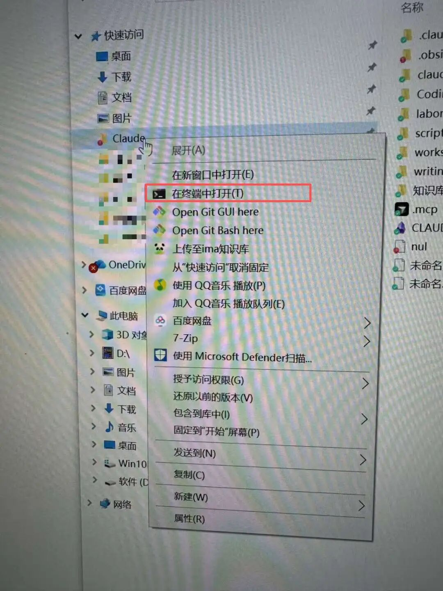

上一篇文章发出后，收到最多的问题是：「听起来很厉害，但我具体该怎么开始？」
好，那我就手把手教你。
这篇是实操教程的第一篇。我会用我自己的 Today 系统作为案例，教你如何从零搭建一个每日股票监控系统。这个系统每天早上帮我完成近 100 只股票的异动监控、新闻分析、假设追踪，整个过程大约 10 分钟。
前置条件
在开始之前，请确认以下几点：
1. Claude Code 已安装
如果还没有，请先参考上一篇文章末尾的安装指南。某鱼的卖家也有教程，或者可以帮你调试到能用的状态。 最难的是布置API和URL地址，我用claude code做了一个小程序，可以快速切换和布置API，在附录里面，大家可以去下载。
2. 文件管理系统
我用的是 Obsidian，一个免费的 Markdown 笔记管理软件，功能极其强大。官网下载：obsidian.md
用它来管理我们创建的协作系统，非常方便。
3. 打开终端
右键点击 claude 文件夹，选择「用终端打开」。如果没有这个选项，去微软商店搜索「Windows Terminal」下载。然后你就能看到这个图（claude文件是新建的） 
4. 跳过授权（重要）
用终端打开 Claude 时，输入：
claude --dangerously-skip-permissions
这样它就不会一直请求授权了。只要在 claude 文件夹内执行，就基本上没问题。
5. 切换到最强模型
进入 Claude Code 后，输入 /model，把默认模型调到 Opus 4.5。咱要用就用最好、最聪明的模型给咱打工。
第一步（最重要）：进入 Plan Mode
在 Claude Code 里做任何系统搭建，第一件事都是进入 Plan Mode。
为什么 Plan Mode 这么重要？
Claude Code 有两种模式：
| Chat Mode | |
| Plan Mode |
对于简单任务，Chat Mode 够用。但搭建一个完整的工作流系统，Plan Mode 是必须的。原因很简单：
避免返工：让 Claude 先想清楚整体架构，比做到一半发现方向错了要高效得多 你能理解系统：Plan Mode 会输出完整的设计方案，你能看懂 Claude 打算怎么做 可以提前纠偏：如果 Claude 的理解有偏差，在规划阶段改比在执行阶段改成本低太多
说白了，Plan Mode 就像是让 Claude 先交一份设计稿给你审批，而不是直接开工然后返工三次。我们都知道，返工是最贵的。
如何进入 Plan Mode？
按两次 Shift + Tab，左下角会显示「Plan Mode」。

然后你可以直接告诉 Claude：
我需要搭建一个每日股票监控系统，主要功能包括：
1. 监控我的自选股列表，检测异动
2. 对异动股票自动搜索新闻，分析原因（用已经连接的AI进行分析）
3. 追踪我的核心投资假设，看有没有新进展
4. 生成一份每日报告
请帮我规划这个系统的架构。
他会问你具体的执行时的一些问题和要求，例如用什么程序语言，主要关注哪个市场，报告格式等等。

Claude 会输出一份详细的规划方案，包括需要哪些文件、数据从哪里来、工作流怎么串联。你看完觉得没问题，再让他开始执行。

小技巧：如果你对某个环节不确定，可以在 Plan Mode 里追问。比如「股票数据从哪里获取？有免费的 API 吗？」Claude 会帮你调研并给出建议。这时候他就像一个不会嫌你问题多的产品经理（而且还不用请他吃饭）。
Plan Mode 用好了，这篇教程就结束了（不是）
理论上，如果你学会了正确使用 Plan Mode，你就可以和 Claude 一起完成你的系统了。
完成系统以后，你可以选择借鉴一下我的工作流，把下面的要求都喂给他，也可以直接让他运行。
一定记得让 Claude Code 帮你测试这个系统，一般都会有一些小 bug。你可以向他提出你最终希望实现的效果，让他帮你去 debug。
我从 0 测试了一下重新通过Plan 构建这个系统，主要的问题：
新闻获取的方式（强调要用 WebSearch） 行情数据的获取（API 配置） 但你可以通过我后面给他的一些指令，去解决这个问题。 可能还有其他我没碰到但你会碰到的坑
测试的过程中需要有耐心！他这么便宜还态度勤恳，打不还手骂不还口的，你得教他！
第二步：拆解你的 Today 工作流
在让 Claude 动手之前，你需要先想清楚：你每天早上到底在做什么？
这一步很重要。Claude 再聪明，也不知道你脑子里的工作流程是什么样的。你得先把它说清楚，他才能帮你自动化。
以我自己为例，我的 Today 工作流是这样的：
工作流拆解
你看，以前第 5 步我压根不写日报。但现在 Claude 帮我写，我反而有了完整的工作记录。这就是自动化的好处：以前懒得做的事情，现在可以「顺便」做了。
关键洞察：你不需要一开始就想得很完美。先把最核心的功能跑通，后面再迭代。
我的 Today 系统也是从最简单的「获取股价 + 检测异动」开始，后来才逐步加上新闻搜索、假设追踪、待办整合这些功能。罗马不是一天建成的，你的监控系统也不是。
第三步：用自然语言和 Claude 对话搭建系统
这是最核心的部分。我会给出关键步骤的 prompt 示例，你可以直接参考。
3.1 创建 Watchlist（自选股列表）
首先你需要告诉 Claude 你要监控哪些股票。
你不需要自己整理格式。只需要从 Wind 导出你的自选股（ticker + 名字），直接粘贴给 Claude，他会自动帮你同步到完整的 watchlist 里。
或者你可以新建一个空白的 md 格式文件，把自选股复制进去，再让他基于这个文件建立 watchlist。
Prompt 示例：
我从 Wind 导出了一份自选股，请帮我同步到 workspace/monitoring/watchlist.md
要求：
1. 自动按行业分组
2. 判断每只股票的市值级别（大盘/小盘）
3. 检查 ticker 格式是否能被 API 识别
4. 保留 watchlist 中已有的股票，只新增/更新我提供的这些
[粘贴 Wind 导出的内容]
Claude 会自动完成：
解析你粘贴的原始数据 归类行业（AI 硬件、电力、新能源车...） 判断市值级别 检查并修正 ticker 格式（A 股加 .SZ/.SH，港股加 .HK 等） 合并到现有的 watchlist 文件中
以下就是他自动生成的格式，我只提供了 ticker：

小技巧：以后新增股票也是同样的流程——直接粘贴 Wind 导出的内容，让 Claude 帮你同步，不用手动编辑 watchlist 文件。
3.2 设置数据获取（关键，AI 通常第一遍会犯错）
股票数据是整个系统的基础。不同市场需要不同的数据源。
以下是我亲测过可以免费使用的 API，你可以直接告诉 AI 去用这些，避免浪费大量时间去测试。你自己去注册一下这些网站，就能拿到免费的 API 了。
Prompt 示例：
我需要获取 watchlist 里股票的实时数据。
我的 watchlist 包含多个市场，请帮我写一个 Python 脚本：
1. 从 watchlist.md 读取股票代码
2. 根据市场自动选择数据源：
- 美股：Stooq（免费）或 Finnhub
- A股：Tushare、新浪财经API
- 港股：EOD Historical Data
3. 批量获取当前价格和涨跌幅
4. 根据市值级别判断是否异动（大盘股 ±3%，小盘股 ±7%）
API Key 我会设置在环境变量里。
Claude 会帮你写一个智能选择数据源的脚本。如果某个 API 获取失败，会自动尝试备用数据源。
大家不需要担心，你就让他去找 API，你只需要登录网站注册，获得那个免费的 API（一串乱七八糟的代码），然后复制粘贴给他，他就可以自动设置好 API，然后进行测试了。
3.3 创建 Today 模板
Prompt 示例：
帮我创建一个 Today 日报的模板，包含以下章节：
1. 今日焦点 - 异动提醒
- 重要异动（有关联假设或涨跌幅大）：需要详细分析
价格、原因、关联假设、建议等
- 普通异动：只列表记录
2. 今日待办
- P0：今日必须完成
- P1：本周重点
- P2：有空再做
3. 核心假设追踪
- 每个假设的最新进展
- 确定性变化
4. 新闻来源汇总

3.4 创建执行命令（Skill）
当基础组件都准备好后，你需要把整个流程串起来。在 Claude Code 里，这叫做 Skill。
Prompt 示例：
帮我创建一个 /today 命令，把以上运行的每日监控封装成一个 Skill，放在 .claude/skills/today.md
Claude 会帮你创建一个完整的 Skill 文件。以后你只需要输入 /today，整个流程就会自动执行。

这就是为什么我说 Claude Code 是「真正能干活的 AI」——你不是在和它聊天，你是在让它帮你搭建一个可以反复使用的系统。
第四步：难点解析
搭建过程中你可能会遇到一些坑，这里提前说一下，帮你省点踩坑的时间。
4.1 API 的配置
问题：Claude Code 怎么读取 API Key？
解决方案：设置环境变量。你可以选择自己设置，也可以让 Claude Code 帮你设置。
Windows（在系统环境变量中添加）：
FINNHUB_API_KEY=你的Finnhub密钥
TUSHARE_TOKEN=你的Tushare密钥
Mac/Linux（在 ~/.zshrc 或 ~/.bashrc 中添加）：
export FINNHUB_API_KEY="你的Finnhub密钥"
export TUSHARE_TOKEN="你的Tushare密钥"
设置完后重启终端，Claude Code 就能通过 os.environ 读取了。
API 获取方式：
Finnhub（美股）：去 finnhub.io 注册，免费版每分钟 60 次调用 Tushare（A股）：去 tushare.pro 注册，需要一定积分才能调用部分接口
4.2 不同市场的数据
好消息是，大部分市场都有免费或低成本的数据源：
实际体验：我的 watchlist 有 200+ 只股票，覆盖美股、A股、港股、日韩，每天早上跑一遍大约 8-10 分钟，绝大部分都能成功获取数据。
获取失败怎么办？ 脚本会自动尝试备用数据源。如果还是失败，会在输出中标记「待人工确认」，你可以手动去看一眼。
4.3 AI分析和搜索
有可能他会要写python程序或者需要你提供外部AI的API去进行搜索和分析，你就直接让他用内置的web search和已经部署的这个opus 4.5模型去分析就行，别让他画蛇添足，多此一举了。
附录
A. Claude Code 安装
如果你还没安装 Claude Code，参考这篇教程：mp.weixin.qq.com/s/pEPweAhpzZb1ef5oMvaDDA
安装完成后，你需要配置 API。Claude Code 本身只是一个工具，需要接入模型才能工作。
B. API 配置工具
你可以直接通过这个工具配置API，也可以通过这个小工具在多个api之间切换（省钱懂不懂！）
我做了一个小工具 claude-switcher，可以在系统托盘快速切换配置：
右键点击托盘图标，选择要切换的配置 自动设置环境变量 重启 Claude Code 即可生效
你可以用 /status 查看你的 URL 地址和 API 是否确实发生变化。
下载地址：
通过网盘分享的文件：Claude switcher.zip 链接：https://pan.baidu.com/s/1KhqtE8oQwVI_ig9-f_vXDQ?pwd=k4ih 提取码：k4ih
我用 Claude Code 自己写的，应该能用！不能用请私信骂我！
C. 常见问题
Q：Plan Mode 和 Chat Mode 怎么切换？A：按两次 Shift + Tab 切换。
Q：Skill 是什么？A：Skill 是封装好的工作流程。你可以把常用的操作封装成 Skill，以后用 /命令名 一键执行。就像是给 Claude 写了一个「标准操作手册」。
Q：Context 不够用怎么办？A：Claude Code 的 Context 上限是 20 万 tokens。如果经常超限，可以：
让 Claude 少说废话（在 CLAUDE.md 里设置「输出简洁」） 把大文件拆分成小文件 用 Skill 封装流程，减少重复说明
Q：搭建过程中 Claude 出错了怎么办？A：很正常，AI 也会犯错。直接告诉他哪里错了，让他改就行。这就是为什么要用 Plan Mode——在规划阶段发现问题，比在执行阶段发现问题成本低得多。
或者你直接告诉claude code你想要的结果，让他想办法帮你实现，实在不行就再问问gpt和gemini，他们会帮你解决几乎所有的问题。
下一步
这篇教程只是起点。Today 系统搭建完成后，你可以继续扩展：
添加更多数据源（港股、期货、加密货币...） 优化异动判断逻辑（加入成交量、波动率等指标） 接入更多投资假设 和其他系统联动（比如研究系统、周报系统）
有问题欢迎在评论区交流。下一篇我会分享如何搭建研究协作系统——让 Claude 帮你写研究报告，而不只是帮你搜资料。
写于 2026 年 1 月，我协助 Claude 完成